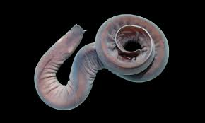
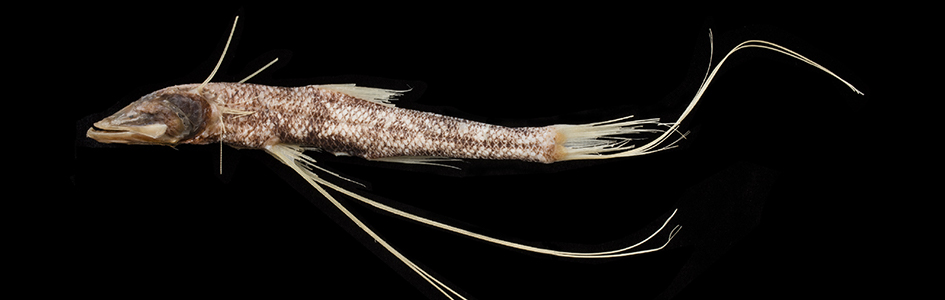
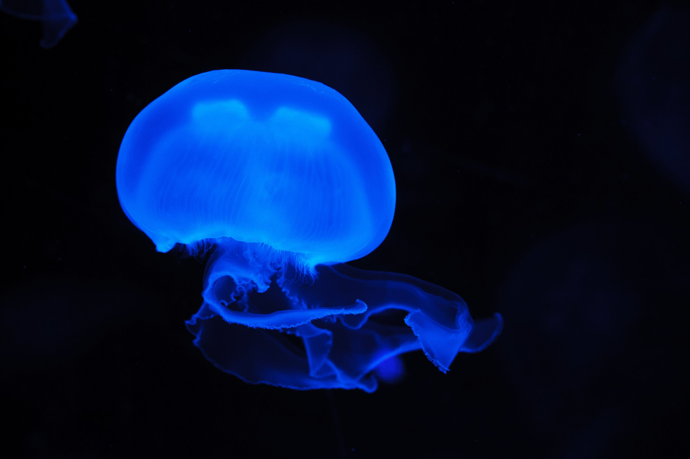

The Abyssopelagic Zone
The Abyssal Zone
The abyssopelagic zone, also known as the abyssal zone or simply as the abyss extends from 3000 meters to 6000 meters. The name comes from a Greek word meaning "no bottom". The water temperature is near freezing, and there is no light at all. Very few creatures can be found at these crushing depths. Most of these are invertebrates such as basket stars and tiny squids. Three-quarters of the ocean floor lies within this zone.
Marine Life


